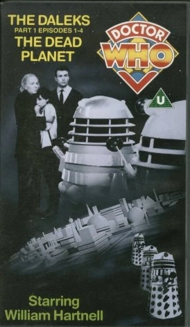
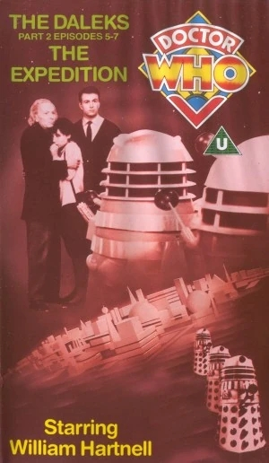

Все эпизоды сохранились. Все 7 эпизодов уцелели на 16‑мм телезаписях в фильмотеке BBC — не были отправлены на уничтожение. Оригинальные студийные видеокассеты стёрты, но телезаписи сохранили изображение.


 VHS 1989. Первый релиз серии — 2 кассеты, эпизодический формат. Это был первый VHS-релиз BBC в эпизодическом формате: до него все выходили омнибусом. Однако сцена из 2-го эпизода была вырезана. [tardis.fandom.com] [en.wikipedia.org]
VHS 1989. Первый релиз серии — 2 кассеты, эпизодический формат. Это был первый VHS-релиз BBC в эпизодическом формате: до него все выходили омнибусом. Однако сцена из 2-го эпизода была вырезана. [tardis.fandom.com] [en.wikipedia.org]
VHS 2001 «Remastered». Переиздание на одной кассете. [tardis.fandom.com]

 VidFIRE (2006). 16‑мм плёнка даёт «киношную» картинку с зернистостью и мерцанием. VidFIRE возвращает видеозаписи оригинальный «видео‑вид» — гладкость и чёткость студийной камеры. Применена для DVD «The Beginning» (30 января 2006), куда вошли три первые серии: «Неземное дитя», «Далеки» и «Грань уничтожения». [tardis.fandom.com] [en.wikipedia.org]
VidFIRE (2006). 16‑мм плёнка даёт «киношную» картинку с зернистостью и мерцанием. VidFIRE возвращает видеозаписи оригинальный «видео‑вид» — гладкость и чёткость студийной камеры. Применена для DVD «The Beginning» (30 января 2006), куда вошли три первые серии: «Неземное дитя», «Далеки» и «Грань уничтожения». [tardis.fandom.com] [en.wikipedia.org]  Цветной омнибус (2024). Семь оригинальных 25‑минутных эпизодов склеены в 75‑минутный фильм и раскрашены. Добавлены новые спецэффекты, полностью новый саундтрек композитора Марка Эйрса. ТВ‑премьера цветной версии состоялась на BBC Four 23 ноября 2023 года. На Blu‑ray и DVD вышла 12 февраля 2024 (UK) — на втором диске оригинальные 7 эпизодов в ч/б. [en.wikipedia.org] [doctorwho.tv]
Цветной омнибус (2024). Семь оригинальных 25‑минутных эпизодов склеены в 75‑минутный фильм и раскрашены. Добавлены новые спецэффекты, полностью новый саундтрек композитора Марка Эйрса. ТВ‑премьера цветной версии состоялась на BBC Four 23 ноября 2023 года. На Blu‑ray и DVD вышла 12 февраля 2024 (UK) — на втором диске оригинальные 7 эпизодов в ч/б. [en.wikipedia.org] [doctorwho.tv]
Blu‑ray Season 1. Ещё не вышел. Лицензионный спор с семьёй Кобёрна (по «Неземному дитя») может задержать выход.